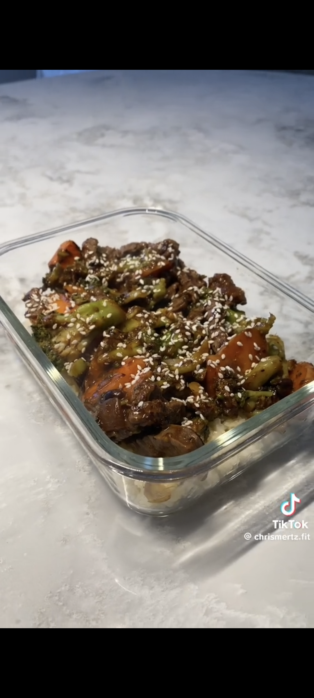

Black Bean Beef Stir Fry with Cauliflower Rice

4 Serving with 310 Calories C:21 F:8 P:36
This is a great low calorie high proein meal, and will still hit the cravings to eat takeout
Ingredients per serve
- 1/2 Bag Cauliflower Rice
- 125g Extra Lean Beef Mince
- 125g Frozen Brocilli
- 50g Carrot
- 1/8 Jar Beef and Black Bean Sauce
Steps
- Cook 500g lean beef mince on a pan, and add favourite seasonings
- Once finished, put it to the side to cool
- Grab one bag of frozen mixed brocilli and defrost in the microwave for a few minutes
- Slice up 200g of carrots
- Cook the defrosted brocilli and corrots in a pan for a few minutes
- Then add in your beef into the pan withthe vegs, and 1/2 a bottle of the Beef and Black Bean Sauce
- Stir it together and then leave it to the side
- Add 2 bags of Cauliflower rice into a pan, and season with favrouite seasonings
- Split into 4 equal meals
The recommeneded seasonings are garlic powder and all purpose seasonings